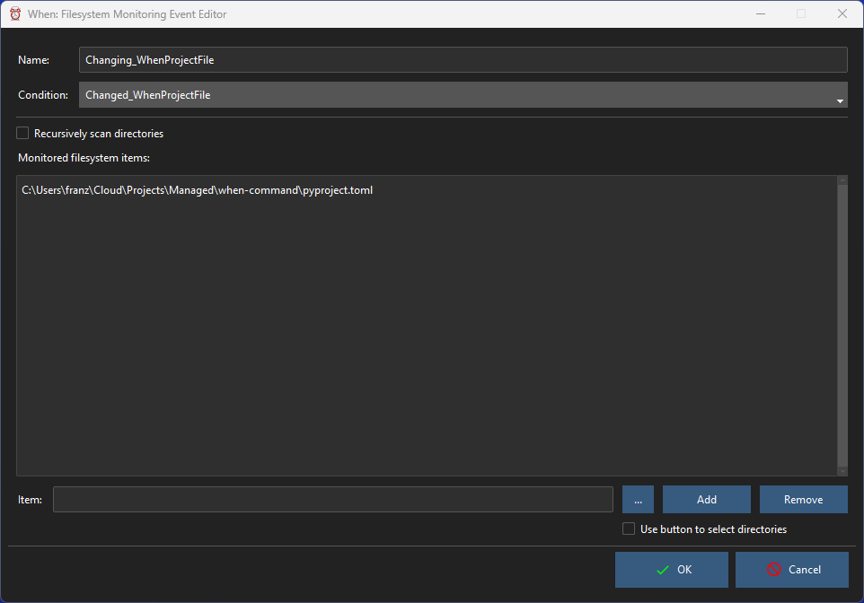

Native Events Editors
The only type of event editable in When that is natively supported by the scheduler is the one that depends on changes in files and directories that are monitored by the operating system.
File System Monitoring
This type of event fires whenever one of the monitored files or directories undergoes a modification: for files it means that its contents or metadata are altered, for directories it also occurs when there is a change in any of the files that they contain. In the latter case, subdirectories are also monitored if the Recursive flag is set.

The event Name is mandatory and must be an alphanumeric string beginning with a letter or an underscore.[1] The associated Condition is also mandatory, and must be selected among the appropriate ones using the drop down list.
The items (files and directories) to be monitored can be provided by entering their path in the Item fiels below the list, and then checking the Add button to populate the list: the button with three dots on the right provides a convenient way to browse the filesystem and select objects. By checking the Use button to select directories option, the dialog box associated with the three-dotted button will allow to choose directories, otherwise to choose files.
To remove an item, double click it on the list and then click the Remove button.
Other Event Types
Items that handle particular events, which may in many cases be available for a specific host platform, are described in this section. In particular, the following types of event are available:
Session Lock Events (Linux only)
Session Unlock Events (Linux only)
and more may be added in the future.